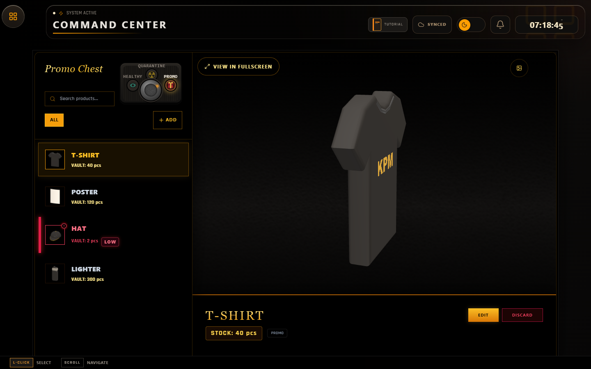
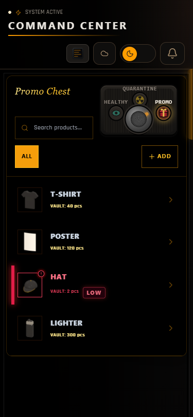
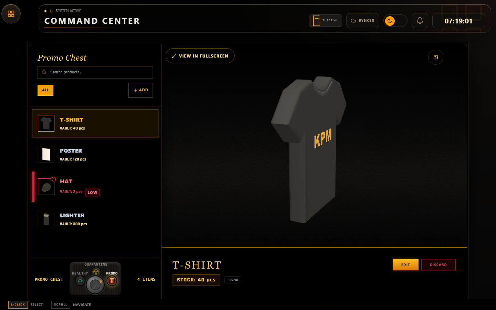
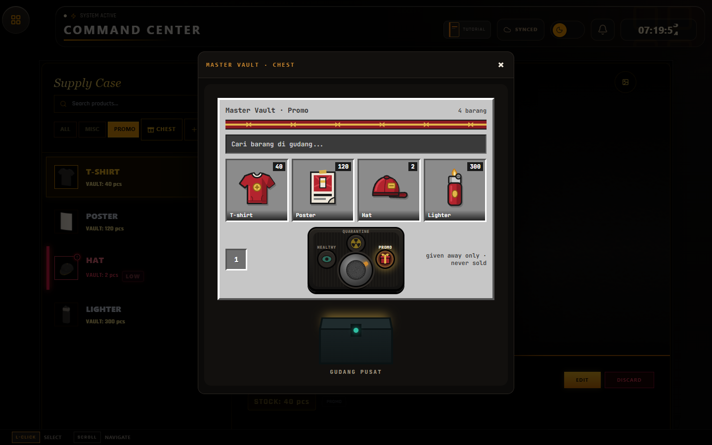
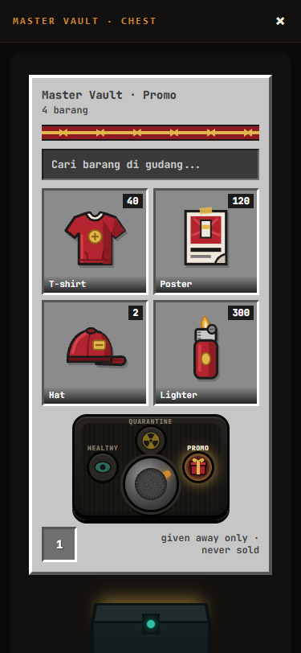

The dial picks which chest the list shows: Healthy, Quarantine or Promo. These frames are the real Master Vault list from the lab, with the prototype's dial put in. When you turn it, the list changes with the same scan line you approved. Pick one letter for the PC and one for the phone. They can be different.
The dial sits right next to the name it changes, so every turn is reported in the title. It costs the least space, and it is the same on the PC and the phone. The search box gets narrower (170 px on the PC, 152 px on the phone), but "Search products..." still fits.


On the PC the dial gets its own deck under the list, with the chest name on the left and the item count on the right, like the deck under the warehouse box. It costs four times the space of A. On the phone it cannot sit at the bottom: the list is part of the page there, so the dial would jump up or down every time a chest has more or fewer items. On the phone B is the same as A.

The list stays exactly as it is today. A CHEST button next to + ADD opens the grey chest box from the prototype as a panel over the page (full screen on the phone). It costs no space, but the promo numbers hide behind a press, and the list behind it still shows them too.


The regional warehouse needs no decision: its box already has the quarantine hatch at the bottom, and the dial takes the hatch's place, as in the prototype. Lamp labels are drawn at 11 px here; the build keeps them at least that size.